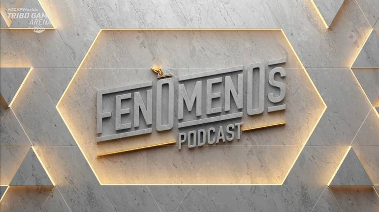

Ronaldo and Gaules launch the "Fenômenos Podcast"
The program will take place at Twitch and has guests such as Neymar and Tiago Leifert

Two phenomena and thousands of stories. One was world champion and is considered one of the best players in football history, the other is one of the greatest streamers in the world, moving thousands of fans and carrying the passion of Brazilian Counter-Strike. In common, the idolatry of millions and stories of resilience.
Ronaldo Fenômeno and Gaules are now coming together to tell their stories and those of special guests in their new podcast together: the "Fenômenos Podcast"
Even with the pandemic and the distance between them, the first season alternates episodes recorded in person and remote chats, always keeping the fun and irreverent tone that captivated the audience. The guests are honored: Neymar, Tiago Leifert and other phenomena in their areas of expertise that are yet to be announced. The premiere is scheduled for January 2022.
The first episode of the first season was recorded at the Museu do Futebol, in São Paulo, and is a conversation between the two presenters only. The episodes will air on Canal do Gaules and Canal do Ronaldo, both on Twitch TV. The first season will feature 10 episodes, which will also be available on YouTube VODs.
“It's always an honor to talk and exchange ideas with Ronaldo. Adding a third phenomenon to the conversation brings many different stories and subjects, in some cases they are different worlds, but mostly, all filled with lots of laughs. Everything that a good review should have”, commented Gaules, who is a partner and streamer at the Omelete Company.
“During the pandemic, I started playing games more often and watched many of Gau's lives. That's when the idea of becoming a streamer was born. I launched Ronaldo TV and got very close to him, he became a partner in games. The podcast is the result of this connection between us and the episodes are becoming sensational. Gaules and I know how to make guests feel at ease, after all they are our friends. And that's where the best reviews come out”, explained Ronaldo.

With over three million followers and peaks of 343,000 simultaneous devices, Gaules became Twitch's most watched channel globally in October. He currently competes in two awards, The Game Awards 2021 as best content creator and in two categories in the E-Sports Brazil Awards, such as Personality of the Year and Streamer of the Year.
Ronaldo recently launched Ronaldo TV, a channel on Twitch in which the ace makes lives by playing games, commenting on football and broadcasting sporting events. The project is run by the holding ODDZ Network, launched that year, which belongs to the former athlete.